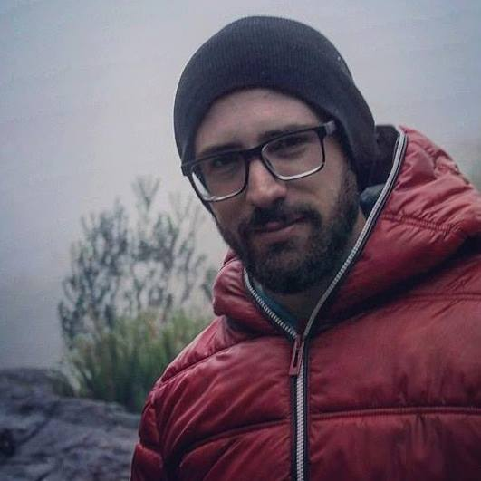

João Pedro Astolfi da Costa

Olá! Me chamo João Pedro e sou um Oficial de Náutica (aka piloto de navio)
em transição de carreira. A pandemia e os meses longe de casa mas perto do
mar me mostraram o quão importante é estar perto das pessoas e lugares que
amamos. Como sempre tive uma afinidade com a tecnologia, comecei a estudar
desenvolvimento de software por conta. Após algum tempo estudando no tempo
livre, escolhi essa área para realizar a minha transição para uma carreira
em terra. Procurei por escolas que pudessem me auxiliar e guiar nessa
trajetória, tendo encontrado e decidido pela Trybe para ser a minha
mentora nessa grande mudança do mar para a tecnologia.
Skills ligados ao desenvolvimento
- HTML & CSS
- JavaScript ES6
- React
- SQL
- Node.js
- TypeScript
- MongoDB
- Python
Soft skills, idiomas e certificações
-
Inglês fluente:
Advanced Exam (Grade A - Level C2) - Cambridge English Language
Assessment
- Italiano básico
interesses
-
Mercado Financeiro: iniciei a jornada de investidor em
2016, investindo no mercado de renda variável
-
Exercício físico: desenvolvi interesse pelo exercício
físico quando fiz parte do Exército Brasileiro, onde me formei como
Aspirate-a-Oficial
-
Leitura: não só de títulos técnicos mas também de
livros de ficção e não ficção, como pode ser visto no
goodreads.
Seções do Portfolio